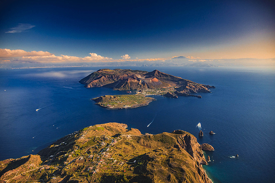
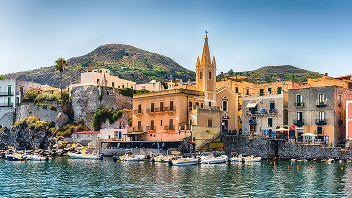
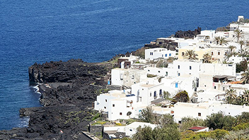
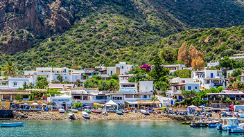

Com’è nascere e crescere nelle isole minori della Sicilia?
Queste pagine mirano a esplorare l’esperienza soggettiva di coloro che vivono stabilmente all’interno di queste isole.

Isole in primo piano

Lipari

Stromboli

Panarea
La dipendenza dai trasporti marittimi
Nelle Eolie il mare non è un paesaggio, ma una risorsa e un confine. Le mareggiate e il salto delle corse bloccano l'arrivo di viveri freschi, costringono gli studenti al pendolarismo d'emergenza in aliscafo e trasformano la salute in un'incognita affidata al meteo e all'elisoccorso.